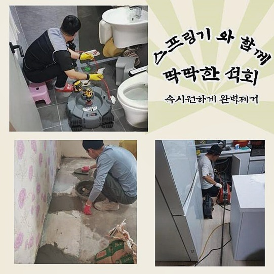
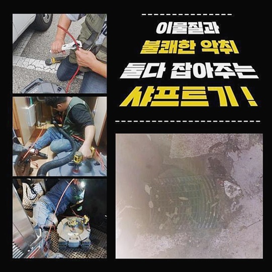
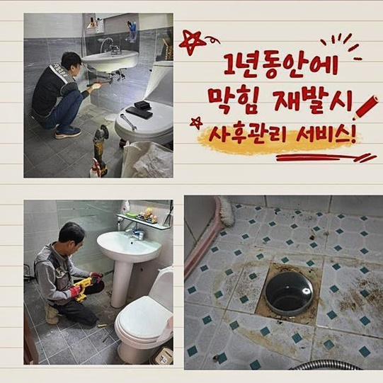
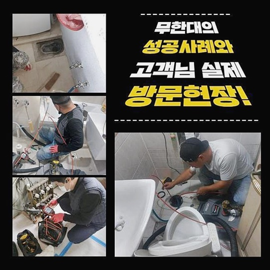
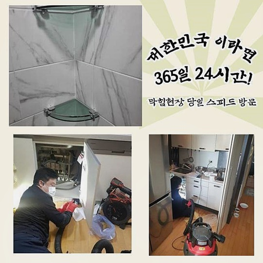
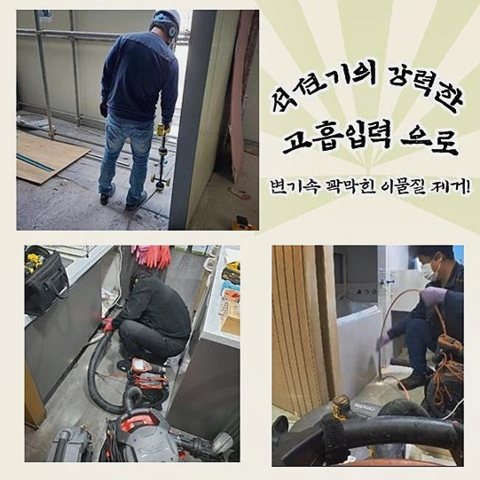

🏠 고양시 현천동오수관뚫음 지축동 하수구뚫어주는곳
용인시 처인구 배관막힘 전문 시공 후기

📋 작업 개요
- 위치: 용인시 처인구, 수원시 영통구, 화성시 동탄
- 서비스 유형: 배관막힘, 하수구청소, 누수수리, 고압세척, 내시경점검
- 작업 일시:
- 업체명: 하수구수사대 (010-5615-2118)
🔍 문제 상황
고양시 현천동오수관뚫음 지축동 하수구뚫어주는곳
하수구가 막혔을시 여러분들은 어떤대처로 뚫어보고자 하실까요
일반적인경우에는 자가조치로 처리하고자 하시는데요
하수구막힘이 발생했을때 조속하게 대처해서 뚫어주는것이 좋아요
막혀있는채 내버려두시면 2차적인 피해로인해 역류현상이나 누수문제가 발생하여 해결하는방법이 점점 어려워질거에요
이미이어진 경우에는 세밀한작업이 요구됩니다
이곳의경우 배수구가 역류하게되어 저희들에게 연락을주셨어요
외부하수구쪽에서 역류를보이고있는 상황이었어요 안쪽에서 발현되지않은것을 어느정도는 다행히지만 외부에서 물이넘치면 전문기기들이 필수적으로 요구된답니다
그렇기에 여러현장에서 작업을경험한 설비업체를 통하여 처리해보셔야해요
고객께서 설명한상황이 심각한상황인것으로 판단되었으므로 전문기기들을 챙겨서 현장장소로 급하게 방문드렸어요
물이역류하는 집수정쪽과 곳곳에있는 여러하수구를 검사했습니다

🔎 원인 분석
💡 전문가 진단: 정밀 진단 장비를 사용하여 슬러지의 고착 여부를 판명하고 타격/세척 작업을 실시했습니다.
막힘증상을 우선적으로 해결해내야할 외부관을 찾을수있었어요
착수전에 배관에 내시경기계를 투입해보니 여러의 오염물질때문에 심각하게 막혀있었습니다
모니터화면으로 오염물형체를 살피는것을 명확히하기가 어려웠어요 이렇다보니 고압세척장비를 사용하여 하수구내부를 세척하기로했어요
배수관쪽으로 바로힘을가해 시도하기보다는 오염물들에 집중하여 청소해봤더니 석션기계만으로는 꺼내기힘든 여러이물이 제거되었습니다
바깥쪽에있던 배관이다보니 나무뿌리나 나뭇잎들이 막히는증세를 발발시킨듯 상당한양이 나오게되었죠
외부배관의경우 나뭇잎이나 나무로인해 사고가일어나기도 하므로 조심해야만해요
세척작업을 시작하여 오염물을꺼내서 보게되면 대부분의 종류들이 나무들이나 흙이라는것이 보였기에 이번엔 조금더 강력한압으로 청소작업을 진행하게되었죠
보통 하수구에서 발견되는 이물은 기름기있는 종류들인데요
흙이나 나무뿌리종류는 배관속에 붙어있지는 않았고 상당량의 오염물이 들어가게되면서 굳게된 상태였어요
고압청소기로 이물의 가운데부분을 강력하게 뚫으면서 바깥쪽으로 배출시키려고 집중해서 작업했죠
강한수압을 가지고있는 고압장비로 제거해내는데도 내부쪽에는 강력한석회가 자리잡고있었는지 확실히 뚫리지못했죠

🔧 작업 과정
확실한 해결을위해서 재차 내시경기계를 투입해서 어느쪽을 공략하는것이 좋은지 살펴보기로했죠
하수도입구 주위에서는 잔여물이 빠져나온상황이라 전보다 시야가트여 잔여물의 상태와종류를 확고히 살필수있었어요
나무뿌리하고 흙들이 뭉친것들을 흡입하면서 살펴보니 나무와모래외에도 다양한 잔여물질들이 지속해서 발견되고있었어요
처음상황과 다르게 상당량의 오염물질이 빠져나온상태여서 고객님도 나오신후 살펴보셨죠
집수정쪽에서 식물을관리할때나 잔여물질들이 유입되는것에 대하여 유의해주실것을 안내해드렸죠
작업진행중 집수정안쪽에서 큰덩어리를 발견했는데요
많은분들께서 사용하시는 하수구이므로 잔해물질들이 유입되기 어렵지않았죠
나무뿌리뭉텅이가 하수구속에 굳어있었지만 청소를진행하니 바깥으로 배출되었죠
끝에는 기름슬러지가 끈적한상태로 굳은곳들도 보이곤했는데 실내쪽에서 배출이되는 기름들과함께 나무와흙들이 쌓이게되면서 하수도를 막게된것으로 파악했습니다
외부하수구는 크기자체가 큰편임에도 하수관속을 막히게할만큼 좋지못한 이물이였어요
석회물들을 제거한뒤 각종잔여물을 전부제거하여 하수도속을 깨끗하게 만들었어요!
배관의넓이가 크다보니 작업을 진행하는데 오랜시간이 걸렸지만 손상이 일어나지않도록 해결할수있었네요
하수도역류가 발생하고있는곳을 점검하면 상상할수없는 오염물을 보는일이 많은데요
막히는증세를 발견한즉시 해결하고자한다면 고압청소기가 없다해도 가볍게 해결할수있어요
막히는현상을 가볍게 여기게되서 미룰수가있어도 하수관을 써야하기에 공사까지 할수있다는것을 참고해주셨으면 좋겠어요
단순막힘이나 해결하기 어렵더라도 전문기사를 통하여 처리해보시면 신속하고 안전히 뚫을수가있죠
저희들의 경우에는 수리방책에 있어서도 현장상태를 체크한후 필요한부분들만 진행해드리므로 가벼운막힘으로 막힘증상이 심하지않다면 간단한 방책으로도 처리해드릴수있어요


✅ 작업 완료
이번작업처럼 심한상태면 첨단기기를 활용해서라도 조치해드리고있죠
하수관내부는 두눈으로 체크하는것과 실제적인 내부속은 차이점이 존재하는데 깊숙한곳까지도 배관카메라로 고객분에게도 살펴볼수있게 진행하여 신뢰를가지시고 편안히 문의해주세요
상가말고도 가정내에 하수구들도 전체로 다루고있사오니 문제가보이는즉시 언제라도 전화주세요!
1시간안팎으로 어떤지역이든 도착하는것이 가능하며 분명한 작업계획으로 공개해드린답니다
밤낮가리지않고 상담할수있으니 연락하시면 상세한응대로 맞이하겠습니다



⚠️ 하수구 배관 막힘 예방 및 관리 가이드
- ✅ 머리카락, 비닐, 물티슈 등 물에 분해되지 않는 이물질은 절대 흘려보내지 마세요.
- ✅ 기름기 많은 식기는 설거지 전 키친타올로 먼저 기름때를 닦아내세요.
- ✅ 주기적으로 배수구에 뜨거운 물을 가득 부어주어 유지방 고착을 방지하세요.
- ✅ 작업 후 1년 이내 재발 시 무상 A/S 보증 서비스를 제공합니다.
💡 핵심 정리
- 확실한 장비 작업(내시경 점검 및 샤프트 스케일링)으로 원인을 뿌리 뽑습니다.
- 작업 후 1년 이내에 동일한 부위 재발 시 100% 무상 A/S 서비스를 보장합니다.
- 서울 · 경기 · 인천 전 지역에 24시간 언제든 긴급 출동할 수 있도록 항시 대기 중입니다.
❓ 자주 묻는 질문 (FAQ)
🚨 용인시 처인구 배관막힘 문제로 고민이신가요?
정확한 원인 진단과 확실한 시공으로 재발 없는 해결을 약속드립니다.
24시간 긴급 출동 | 서울 · 경기 · 인천 전지역 | 1년 내 재발 시 무상 A/S